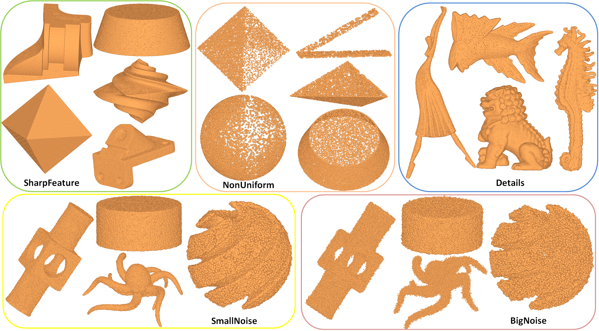
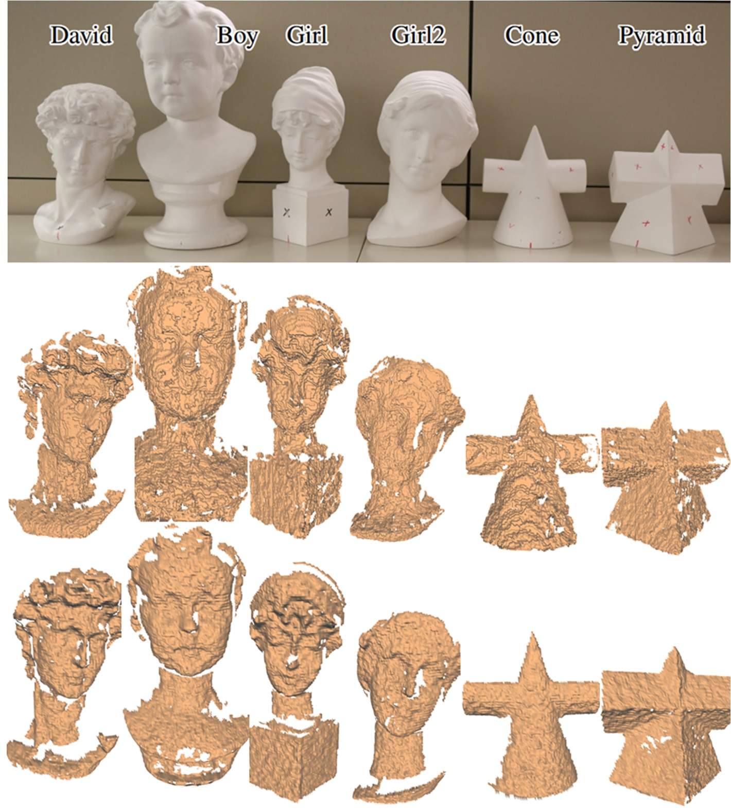

Content
It is well known that the points are sampled from a piecewise manifold and the normal of a point lying on the interior
of a smooth surface patch is the normal of the surface naturally.
But the normals of points on the intersections of different surface patches are ambiguous and undefined.
In this paper, we present a unified definition of point cloud normal for these two cases. We claim that a
point may have multiple normals, each of which is determined by one surface patch where the point is lying.
A multi-normal estimation algorithm (PCV-MN) is also proposed.
The definition provides at least two benefits.
First, extracting multiple normals for feature points may enhance some succeeding applications such as reconstruction, rendering or feature detection.
Moreover, according to the definition, we improve the Root Mean Square measure ($RMS_\tau$).
Thus the errors of estimated normals, especially for the feature points, could be analyzed quantitatively.
Our PCV-MN outputs a set of normals for each edge/corner point describing all the underlying surfaces at the
point. It is implemented by iterating a pair consistency voting (PCV) method. PCV is designed to extract the
normal of the surface patch which takes the largest area among the patches sharing the point in the neighborhood.
the most "significant" surface patch at the point.
For a point, we collect a set of candidate planes, each of which is determined by three randomly picked neighbors.
The current point's neighbors vote for each plane and the plane with the most votes win.
The contributions of our work are summarized as follows:
- A definition of point cloud normal is given, which benefits some succeeding applications. A novel error
measure compatible with the definition is also formulated to evaluate various normal estimators quantitatively.
- A voting approach based on pair consistency of preliminary normals is presented for normal estimation.
By taking all neighbor pairs into consideration, abundant reliable pairs dominate the voting and guarantee the robustness
and effectiveness of the algorithm.
- We construct the first benchmark for normal estimation. The data, with various features, details, sampling densities,
noise levels and resolutions, provides a sound and empirical basis for research on normal estimation.
Normal Estimation Benchmark
The error measure
Various normal estimators outputting a normal per point can be compared with the Root Mean Square with threshold (RMS$_{\tau}$) .
We generalize it to handle the case that each point has multiple ground truth normals. The Root Mean Square measure with threshold for multiple normals ($RMSM_{\tau}$) is defined as:
$$
RMSM_{\tau} = \sqrt{\frac{1}{|\mathcal{P}|}\sum_{p \in \mathcal{P}} (\frac{1}{|\widetilde{N}_{p}|}\sum_{\widetilde{n}_{p}\in\widetilde{N}_{p}} \min_{n_{p}\in N_{p}}f(\widehat{n_{p} \widetilde{n}_{p}})^2 )}, \\
$$
where $N_{p}$ and $\widetilde{N}_{p}$ are the ground truth and estimated normal sets of $p$, respectively, $\widehat{n_{p}\widetilde{n}_{p}}$ is the angle between $n_{p}$ and $\widetilde{n}_{p}$, $f(\widehat{n_{p} \widetilde{n}_{p}})$ is defined as\\
$$
f(\widehat{n_{p} \widetilde{n}_{p}}) = \left\{
\begin{aligned}
& \widehat{n_{p}\widetilde{n}_{p}}, \mbox{if } \widehat{n_{p} \widetilde{n}_{p}} < \tau \\
& \pi / 2, \mbox{otherwise}
\end{aligned}
\right. .
$$
For the algorithms outputting one normal per point, the size of $\widetilde{N}_{p}$ is one.
As in \cite{cgf/BoulchM12}, We set $\tau = 10^{\circ}$.
Ground truth dataset

Synthesized Data Set

Scanned Data Set
Our ground truth data are points with multiple normals per point. The points are sampled from triangular meshes,
which are synthesized or reconstructed from real scanning data. To generate feature points precisely, we use the
mesh's vertices as the samples and the normals of its surrounding faces as the ground truth normals of the point:
$$
N_{p_{i}}=\{n_{f}|f\mbox{ is a face containing } p_{i}\}.
$$
The variation of $N_{p_{i}}$ is very small when the point lies in the interior of some smooth surface patch, while that would
be large when the point is sampled from feature edges or corners.
Two groups of data are collected: 152 synthesized point clouds and 288 real scans.
The synthesized data are point clouds with various properties which are divided into five categories.
Each captures one kind of challenges in normal estimation.
There are thirty, twenty one and twenty one point clouds for SharpFeature, Details and NonUniform categories
respectively, which are sampled from ten, seven and seven models using three different resolutions.
The SmallNoise category includes forty models with sharp features perturbed by centered Gaussian noise with the
deviation defined as 30$\%$, 40$\%$, 50$\%$, and 60$\%$ average distance between points.
The last category is BigNoise. It includes forty models with sharp features perturbed by centered Gaussian noise
with deviation defined as 0.2$\%$, 0.3$\%$, 0.4$\%$, and 0.5$\%$ of the diagonal of the axis-aligned bounding box.
{kind=link}
{kind=link}
{kind=link}